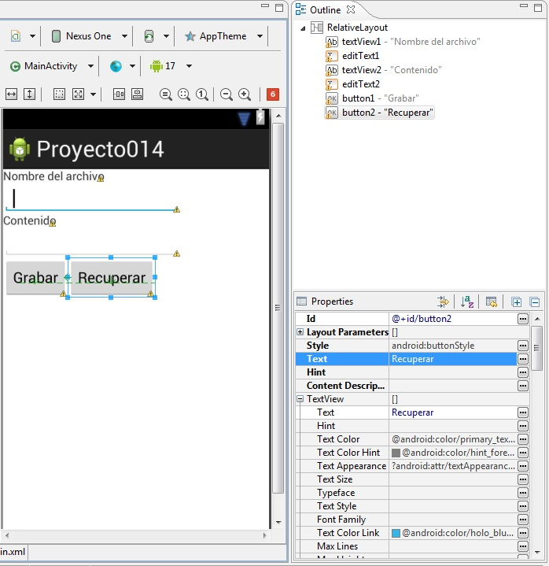
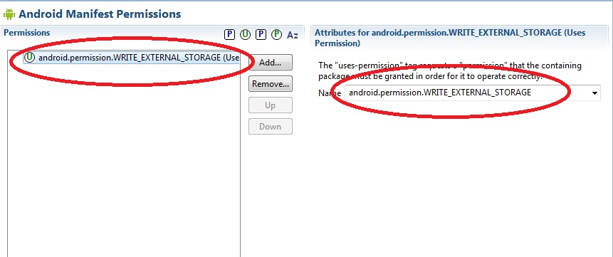

13 - Almacenamiento de datos en un archivo de texto localizado en una tarjeta SDYa se encuentra disponible el nuevo tutorial para aprender android con el nuevo entorno Android Studio propuesto por Google y que remplaza a Eclipse. |
En el concepto anterior vimos como crear y leer un archivo de texto en la memoria interna del equipo Android. En algunas situaciones podría ser útil almacenar los datos en una tarjeta SD, esto debido a su mayor capacidad o la facilidad de compartir los archivos con otras personas entregando la tarjeta SD.
Confeccionar un programa que permita ingresar el nombre de un archivo y el contenido. Permitir grabar los datos ingresados al presionar un botón. Disponer un segundo botón que permita recuperar los datos del archivo de texto.
Hacer que los archivos se graben en una tarjeta SD.
La interfaz visual a implementar es la siguiente:
El primer paso es modificar el archivo AndroidManifest.xml para permitir el acceso a la tarjeta SD desde nuestra aplicación esto lo hacemos desde el editor visual del archivo AndroidManifest.xml:
Debemos presionar el botón "Add" seleccionar "Uses Permision" y luego en name seleccionar "android.permission.WRITE_EXTERNAL_STORAGE".
El código fuente es:
package com.javaya.proyecto014;
import java.io.BufferedReader;
import java.io.File;
import java.io.FileInputStream;
import java.io.FileOutputStream;
import java.io.IOException;
import java.io.InputStreamReader;
import java.io.OutputStreamWriter;
import android.app.Activity;
import android.os.Bundle;
import android.os.Environment;
import android.view.Menu;
import android.view.View;
import android.widget.EditText;
import android.widget.Toast;
public class MainActivity extends Activity {
EditText et1;
EditText et2;
@Override
protected void onCreate(Bundle savedInstanceState) {
super.onCreate(savedInstanceState);
setContentView(R.layout.activity_main);
et1 = (EditText) findViewById(R.id.editText1);
et2 = (EditText) findViewById(R.id.editText2);
}
@Override
public boolean onCreateOptionsMenu(Menu menu) {
// Inflate the menu; this adds items to the action bar if it is present.
getMenuInflater().inflate(R.menu.activity_main, menu);
return true;
}
public void grabar(View v) {
String nomarchivo = et1.getText().toString();
String contenido = et2.getText().toString();
try {
File tarjeta = Environment.getExternalStorageDirectory();
File file = new File(tarjeta.getAbsolutePath(), nomarchivo);
OutputStreamWriter osw = new OutputStreamWriter(
new FileOutputStream(file));
osw.write(contenido);
osw.flush();
osw.close();
Toast.makeText(this, "Los datos fueron grabados correctamente",
Toast.LENGTH_SHORT).show();
et1.setText("");
et2.setText("");
} catch (IOException ioe) {
}
}
public void recuperar(View v) {
String nomarchivo = et1.getText().toString();
File tarjeta = Environment.getExternalStorageDirectory();
File file = new File(tarjeta.getAbsolutePath(), nomarchivo);
try {
FileInputStream fIn = new FileInputStream(file);
InputStreamReader archivo = new InputStreamReader(fIn);
BufferedReader br = new BufferedReader(archivo);
String linea = br.readLine();
String todo = "";
while (linea != null) {
todo = todo + linea + "
";
linea = br.readLine();
}
br.close();
archivo.close();
et2.setText(todo);
} catch (IOException e) {
}
}
}
El método para grabar los datos en un archivo de texto localizado en una tarjeta SD comienza obteniendo el directorio raiz de la tarjeta a través del método getExternalStorageDirectory(), el mismo retorna un objeto de la clase File.
public void grabar(View v) {
String nomarchivo = et1.getText().toString();
String contenido=et2.getText().toString();
try
{
File tarjeta = Environment.getExternalStorageDirectory();
Creamos un nuevo objeto de la clase File indicando el camino de la unidad SD y el nombre del archivo a crear:
File file = new File(tarjeta.getAbsolutePath(), nomarchivo);
Por último similar al acceso de un archivo interno creamos un objeto de la clase OutputStreamWriter:
OutputStreamWriter osw =new OutputStreamWriter(new FileOutputStream(file));
Grabamos el contenido del EditText:
osw.write(contenido);
Cerramos el archivo:
osw.flush();
osw.close();
Toast.makeText(this,"Los datos fueron grabados correctamente",Toast.LENGTH_SHORT).show();
et1.setText("");
et2.setText("");
}
catch (IOException ioe)
{
}
}
Para la lectura del archivo nuevamente obtenemos la referencia de la tarjeta SD para obtener el path de la unidad de almacenamiento, el resto del algoritmo es similar al visto con un archivo interno:
public void recuperar(View v) {
String nomarchivo = et1.getText().toString();
File tarjeta = Environment.getExternalStorageDirectory();
File file = new File(tarjeta.getAbsolutePath(), nomarchivo);
try {
FileInputStream fIn = new FileInputStream(file);
InputStreamReader archivo=new InputStreamReader(fIn);
BufferedReader br=new BufferedReader(archivo);
String linea=br.readLine();
String todo="";
while (linea!=null)
{
todo=todo+linea+"\n";
linea=br.readLine();
}
br.close();
archivo.close();
et2.setText(todo);
} catch (IOException e)
{
}
}
Este proyecto lo puede descargar en un zip desde este enlace: proyecto014.zip